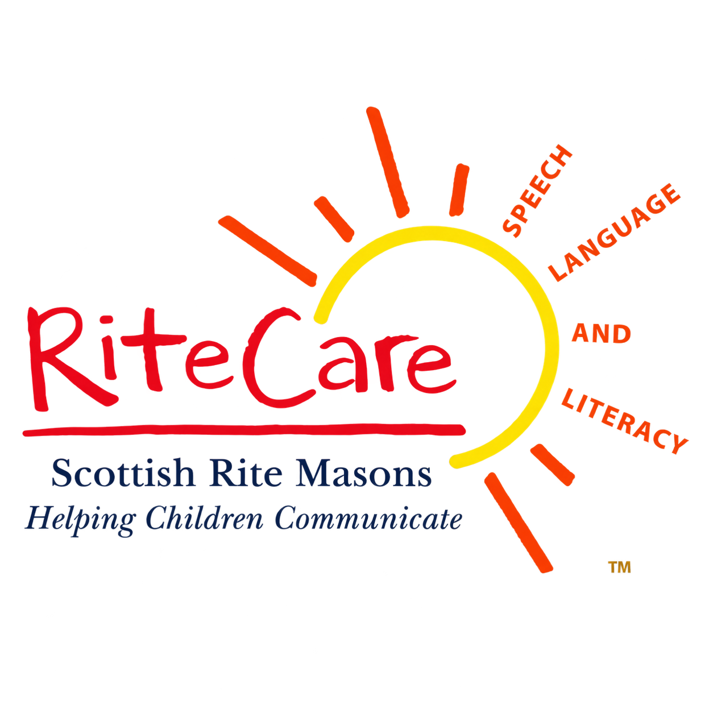
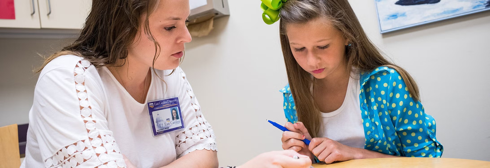
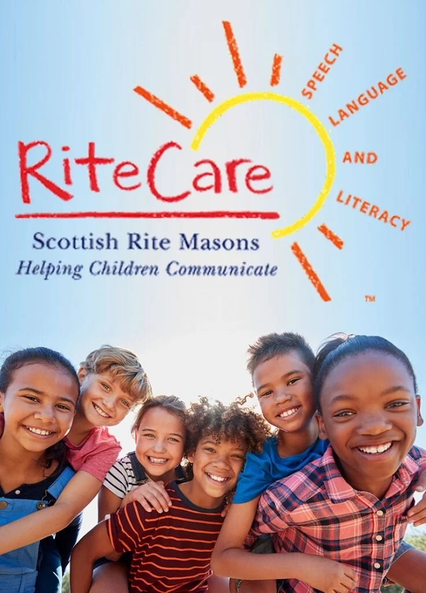
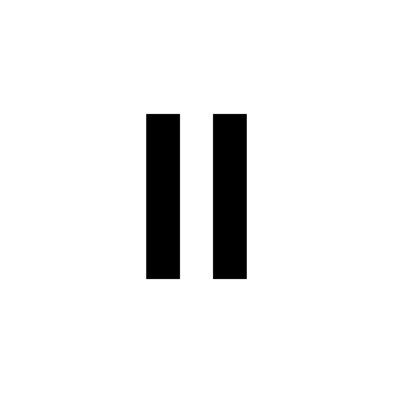

Children and teens
Families and caregivers can ask about communication concerns, current services, eligibility, and referrals.

Greater YellowstoneSCOTTISH RITE SPEECH CLINICCOMMUNICATION SUPPORT AT EVERY AGE
A word. A conversation. A connection.
Every step in communication matters.
Greater Yellowstone Scottish Rite Speech Clinic serves children and adults living with speech and communication conditions.

OUR PURPOSE
Being able to share an idea, ask a question, or tell a story can open a person’s world.
Greater Yellowstone Scottish Rite Speech Clinic Inc. is a nonprofit organization based in Bozeman, Montana. Our purpose centers on supporting communication for children and adults with speech and communication conditions.
Whether you are seeking information for yourself, a child, a loved one, or a community member, we welcome your questions.
Start a conversationWHO WE SERVE
Speech and communication conditions can affect people at any age. Reach out to learn about the clinic and discuss what information you need next.
Families and caregivers can ask about communication concerns, current services, eligibility, and referrals.
Adults living with speech or communication conditions can contact the clinic directly or with support from a caregiver.
We welcome general questions from the people helping a loved one navigate communication support.

A COMMUNITY THAT CARES
Helping people communicate starts with people who care.
Individuals, families, caregivers, neighbors, and community members all have a place in the conversation. If you would like to learn more about our nonprofit or support its future, we would love to hear from you.
Ask how to get involvedLOOKING FOR PARTNERS
We are seeking mission-aligned partners in accessibility, technology, nonprofit support, healthcare, education, and community service.
The programs below are opportunities we hope to explore. Their inclusion does not imply a current partnership, endorsement, participation, or approval.

In progressA future opportunity to explore responsible voice technology and voice-restoration access for people with communication needs.
Explore the official programA potential resource for nonprofit verification, technology offers, funding connections, and access to corporate giving programs.
Visit GoodstackA future opportunity to create accessible education, outreach, fundraising, and community materials through nonprofit design tools.
Explore the official programWe welcome conversations with speech professionals, healthcare providers, schools, accessibility groups, volunteers, funders, and local businesses.
Propose a partnershipBECOME A FUTURE PARTNER
Email support@yellowstonespeechclinic.org with your question and preferred contact details. Your email app will open when you use an email link on this page.
Yes. The clinic is intended for children and adults with speech and communication conditions. Please contact us to confirm current services, eligibility, age requirements, and any referral requirements.
Contact the clinic for current information about costs, financial assistance, appointment availability, and wait times.
Our mailing address is PO Box 35, Bozeman, Montana. This is a postal address, not a walk-in clinic location. Please email us to confirm appointment and visit arrangements.
No. They are programs and partnership opportunities the clinic hopes to explore. Their inclusion does not represent approval, participation, sponsorship, or endorsement.
Email us with the subject “Supporting the clinic” to ask about current ways to get involved or contribute.
LET’S CONNECT
Questions about the clinic or ways to help?
Send us a note. We look forward to hearing from you.
For your privacy, please keep your first email to general questions and contact information. Ask the clinic how to share medical records securely.